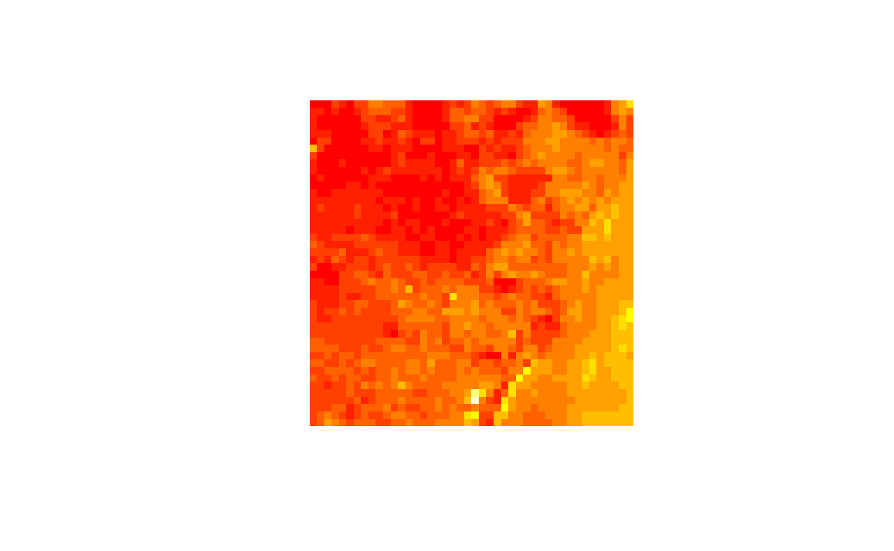
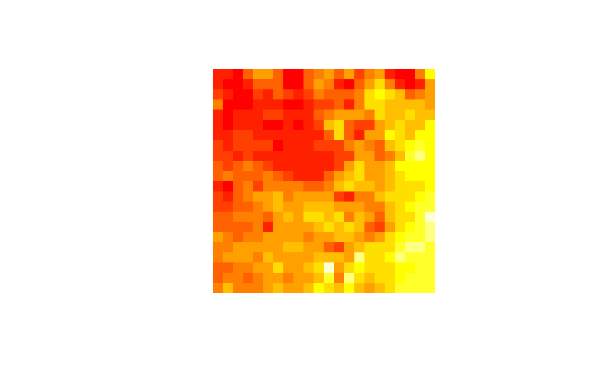
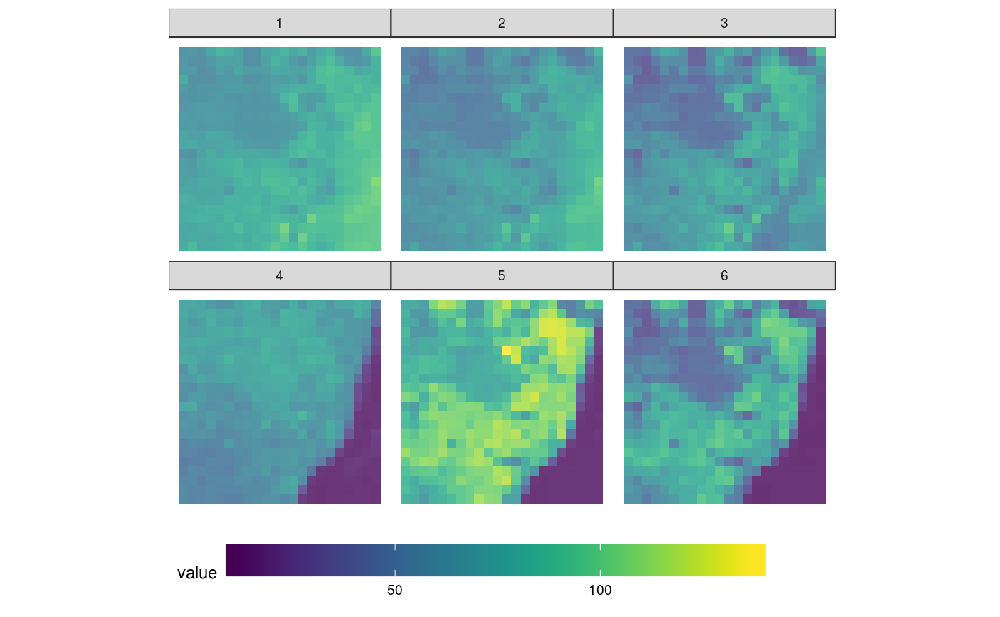
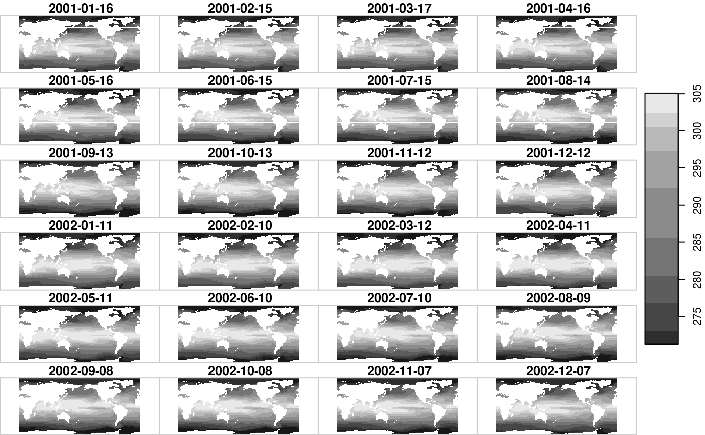
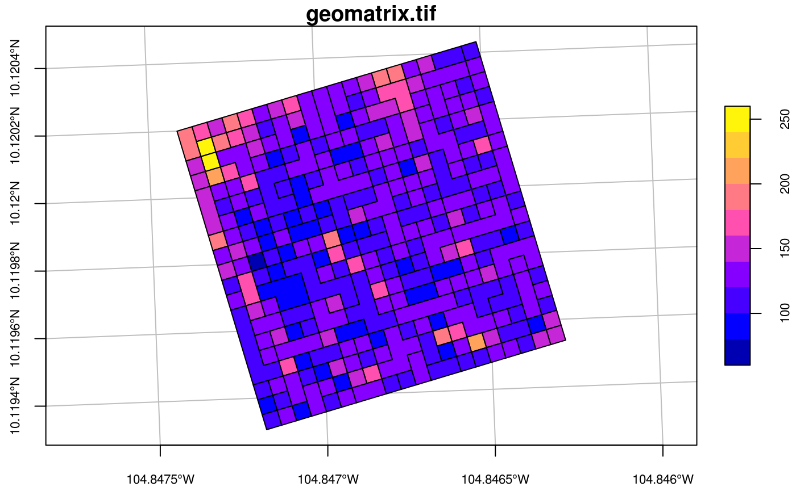

library(stars)
## Loading required package: abind
## Loading required package: sf
## Linking to GEOS 3.5.0, GDAL 2.2.2, PROJ 4.8.0
## Registered S3 method overwritten by 'dplyr':
## method from
## as.data.frame.tbl_df tibbletif = system.file("tif/L7_ETMs.tif", package = "stars")
x = read_stars(tif)
str(x)
## List of 1
## $ L7_ETMs.tif: num [1:349, 1:352, 1:6] 69 69 63 60 61 61 62 60 64 63 ...
## - attr(*, "dimensions")=List of 3
## ..$ x :List of 7
## .. ..$ from : num 1
## .. ..$ to : num 349
## .. ..$ offset: num 288776
## .. ..$ delta : num 28.5
## .. ..$ refsys: chr "+proj=utm +zone=25 +south +ellps=GRS80 +towgs84=0,0,0,0,0,0,0 +units=m +no_defs "
## .. ..$ point : logi FALSE
## .. ..$ values: NULL
## .. ..- attr(*, "class")= chr "dimension"
## ..$ y :List of 7
## .. ..$ from : num 1
## .. ..$ to : num 352
## .. ..$ offset: num 9120761
## .. ..$ delta : num -28.5
## .. ..$ refsys: chr "+proj=utm +zone=25 +south +ellps=GRS80 +towgs84=0,0,0,0,0,0,0 +units=m +no_defs "
## .. ..$ point : logi FALSE
## .. ..$ values: NULL
## .. ..- attr(*, "class")= chr "dimension"
## ..$ band:List of 7
## .. ..$ from : num 1
## .. ..$ to : Named int 6
## .. .. ..- attr(*, "names")= chr "band"
## .. ..$ offset: num NA
## .. ..$ delta : num NA
## .. ..$ refsys: chr NA
## .. ..$ point : logi NA
## .. ..$ values: NULL
## .. ..- attr(*, "class")= chr "dimension"
## ..- attr(*, "raster")=List of 3
## .. ..$ affine : num [1:2] 0 0
## .. ..$ dimensions : chr [1:2] "x" "y"
## .. ..$ curvilinear: logi FALSE
## .. ..- attr(*, "class")= chr "stars_raster"
## ..- attr(*, "class")= chr "dimensions"
## - attr(*, "class")= chr "stars"
x
## stars object with 3 dimensions and 1 attribute
## attribute(s):
## L7_ETMs.tif
## Min. : 1.00
## 1st Qu.: 54.00
## Median : 69.00
## Mean : 68.91
## 3rd Qu.: 86.00
## Max. :255.00
## dimension(s):
## from to offset delta refsys point values
## x 1 349 288776 28.5 +proj=utm +zone=25 +south... FALSE NULL [x]
## y 1 352 9120761 -28.5 +proj=utm +zone=25 +south... FALSE NULL [y]
## band 1 6 NA NA NA NA NULLWe can read rasters at a lower resolution when they contain so-called overviews. For this GeoTIFF file, the were created with the gdaladdo utility, in particular
gdaladdo -r average L7_ETMs.tif 2 4 8 16which adds course resolution versions by averaging blocks of pixels.
(x = read_stars(tif, options = c("OVERVIEW_LEVEL=1")))
## stars object with 3 dimensions and 1 attribute
## attribute(s):
## L7_ETMs.tif
## Min. : 11
## 1st Qu.: 57
## Median : 70
## Mean : 69
## 3rd Qu.: 84
## Max. :209
## dimension(s):
## from to offset delta refsys point values
## x 1 88 288776 113.028 +proj=utm +zone=25 +south... FALSE NULL [x]
## y 1 88 9120761 -114 +proj=utm +zone=25 +south... FALSE NULL [y]
## band 1 6 NA NA NA NA NULL
image(x)(x = read_stars(tif, options = c("OVERVIEW_LEVEL=2")))
## stars object with 3 dimensions and 1 attribute
## attribute(s):
## L7_ETMs.tif
## Min. : 11.00
## 1st Qu.: 58.00
## Median : 71.00
## Mean : 69.12
## 3rd Qu.: 84.00
## Max. :152.00
## dimension(s):
## from to offset delta refsys point values
## x 1 44 288776 226.057 +proj=utm +zone=25 +south... FALSE NULL [x]
## y 1 44 9120761 -228 +proj=utm +zone=25 +south... FALSE NULL [y]
## band 1 6 NA NA NA NA NULL
image(x)
(x = read_stars(tif, options = c("OVERVIEW_LEVEL=3")))
## stars object with 3 dimensions and 1 attribute
## attribute(s):
## L7_ETMs.tif
## Min. : 12.00
## 1st Qu.: 58.00
## Median : 71.00
## Mean : 69.24
## 3rd Qu.: 83.00
## Max. :137.00
## dimension(s):
## from to offset delta refsys point values
## x 1 22 288776 452.114 +proj=utm +zone=25 +south... FALSE NULL [x]
## y 1 22 9120761 -456 +proj=utm +zone=25 +south... FALSE NULL [y]
## band 1 6 NA NA NA NA NULL
image(x)
TODO: aspect ratio, title, values along x and y axis, degree symbols
as.data.frame
names(x) = "value"
df = as.data.frame(x)
library(ggplot2)
## Registered S3 methods overwritten by 'ggplot2':
## method from
## [.quosures rlang
## c.quosures rlang
## print.quosures rlang
library(viridis)
## Loading required package: viridisLite
library(ggthemes)
ggplot() +
geom_tile(data=df, aes(x=x, y=y, fill=value), alpha=0.8) +
facet_wrap("band") +
scale_fill_viridis() +
coord_equal() +
theme_map() +
theme(legend.position="bottom") +
theme(legend.key.width=unit(2, "cm"))
aperm
change (permute) dimension order:
aperm(x, c(1,3,2))
## stars object with 3 dimensions and 1 attribute
## attribute(s):
## value
## Min. : 12.00
## 1st Qu.: 58.00
## Median : 71.00
## Mean : 69.24
## 3rd Qu.: 83.00
## Max. :137.00
## dimension(s):
## from to offset delta refsys point values
## x 1 22 288776 452.114 +proj=utm +zone=25 +south... FALSE NULL [x]
## band 1 6 NA NA NA NA NULL
## y 1 22 9120761 -456 +proj=utm +zone=25 +south... FALSE NULL [y]
aperm(x, c("band", "x", "y"))
## stars object with 3 dimensions and 1 attribute
## attribute(s):
## value
## Min. : 12.00
## 1st Qu.: 58.00
## Median : 71.00
## Mean : 69.24
## 3rd Qu.: 83.00
## Max. :137.00
## dimension(s):
## from to offset delta refsys point values
## band 1 6 NA NA NA NA NULL
## x 1 22 288776 452.114 +proj=utm +zone=25 +south... FALSE NULL [x]
## y 1 22 9120761 -456 +proj=utm +zone=25 +south... FALSE NULL [y]The sea surface temperatures (collected by PCMDI for use by the IPCC) example file was downloaded from https://www.unidata.ucar.edu/software/netcdf/examples/files.html
nc = system.file("nc/tos_O1_2001-2002.nc", package = "stars")
(x = read_stars(nc))
## stars object with 3 dimensions and 1 attribute
## attribute(s):
## tos_O1_2001-2002.nc
## Min. :271.2
## 1st Qu.:275.1
## Median :285.5
## Mean :286.7
## 3rd Qu.:299.1
## Max. :305.5
## NA's :228240
## dimension(s):
## from to offset delta refsys point values
## x 1 180 0 2 NA NA NULL [x]
## y 1 170 90 -1 NA NA NULL [y]
## time 1 24 2001-01-16 30 days POSIXct NA NULL
plot(x, main = "")
sf
An example of a raster with rows and columns that are not aligned with E-W and N-S is the following:
geomatrix = system.file("tif/geomatrix.tif", package = "stars")
x = read_stars(geomatrix)
st_dimensions(x)
## from to offset delta refsys point values
## x 1 20 1841002 1.5 +proj=utm +zone=11 +datum... TRUE NULL [x]
## y 1 20 1144003 -1.5 +proj=utm +zone=11 +datum... TRUE NULL [y]
## sheared raster with parameters: -5 -5
library(sf)
s = st_as_sf(x, as_points = FALSE)
par(cex.axis = .7) # font size axis tic labels
plot(s, axes =TRUE, main = "geomatrix.tif", graticule = TRUE)
TODO: single NetCDF with multiple time and multiple depths
TODO: conversion to and from raster